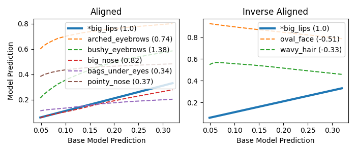

More Examples
| Classifier | Classifier Input (x0) | Counterfactual (x-λ) |
Counterfactual Video | Counterfactual Alignment Plot |
|---|---|---|---|---|
| pointy_nose | ||||
| attractive | ||||
| big_lips |

|

|
 |
Examples showing the CF alignment of face classifiers. The relative change with respect to the base classifier is shown next to the name of the classifier in the legend.